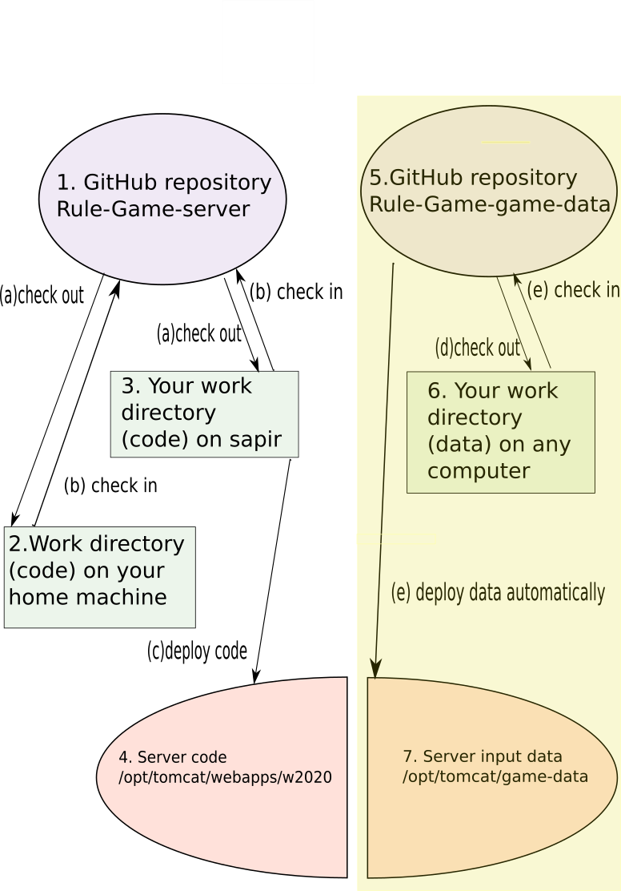

Standard Operating Procedures
Updated 2020-10-11.
Maintaining and deploying server code and server data
The Game Server source code (including documentation web pages) and the read-only data (CSV files which control the experiments) are handled as outlined in the chart below:

The chart includes the following locations:
- 1. The GitHub repository is the place where the "master code" of the server code and read-only data is stored. The location is as follows: Rule-Game-server. If you need access to this project, send your Github account name to Vladimir, and ask to add you to the list of contributors.
- 2. Your work directory on your home of office computer. You can create and modify code and data files on any computer which is convenient for you to use, such as your home or office computer. For illustration, let's assume that the place where you work on this project is ~/w2020.
- 3. Your work directory on sapir. Sapir is just a Linux machine, and is as good as any place to work on editing more files. However, your work directory on sapir (let's assume it's also ~/w2020) is a particularly important place, since from there you can deploy code and data to the server directory.
- 4. "live" code. The "running" Web Rule Game server's code is located in /opt/tomcat/webapps/w2020. You don't touch this directory directly, but deploy code there using the procedure outlioned in (c) below.
- 5. "live" data. The "running" Web Rule Game server reads its read-only data from CSV files that are located under /opt/tomcat/game-data. In order to ensure that your files don't just disappear after a subsequent deployment, it is preferably that you don't edit data files directly in this directory. Instead, deploy data files to here from your sapir working directory (3) using the deployment procedure described in (d) below.
You may carry out the following procedures:
- (a) Check out. Before you start working on the serve code and data, either on your home computer (2) or on sapir (3), you need to get the current version of the project's files from the GitHub server. You can do it as follows:
cd ~/w2020
mkdir game
cd game
git init
git remote add origin https://github.com/vmenkov/Rule-Game-server.git
git pull origin master
Later, you can update the files in your working directory from the Github repository every now and then as follows:
cd ~/w2020/game
git pull origin master
Besides git, there are various other command-line and visual client applications that work with Github (e.g. svn). If you use one of those, modify the above commands as appropriate for your client.
Various subdirectories of game containing the following materials:
- game-data - read-only data files (rule sets, experiment plans, etc). See the Data Guide for more info).
- web - documentation
- src - server source code
- (b) Check in. Once you have done some work in your working directory (either on your home computer (2) or on sapir (3)), you may want to send your updated files to the Github repository, so that you or other contributors can continue working with them on other machines. Do it as follows:
- If you have created any new files or directories, make sure that they are tracked by the version control. For example, if you have created a new experiment plan named MyPlan and the rule sets named My-Rule-01.txt thru
My-Rule-01.txt, you can "register" them with the version control with
cd ~/w2020/game
cd game-data
git add trial-lists/MyPlan rules/My-Rule-*.txt
- Send all new and updated files to the Github repository:
cd ~/w2020/game
git commit -a
git push origin
- (c) Deploy code. If you have modified the server code and want to deploy it to the "live" server, you can do it as follows:
- Make sure that the directory /opt/ant/bin has been added to your PATH on sapir (edit your .cshrc, .login, or what have you).
- Make sure that the working directory on sapir contains the current version of the code (it is current because you have either just modified it right here, or have pulled the current version from Github, as per (a)).
- Execute the following commands:
cd ~/w2020/game
ant clean javadoc war
sudo cp ../w2020.war /opt/tomcat/webapps
The ant command above compiles the source code, and packs the compiled code, along with the documentation and third-party libraries, into a large file in WAR format. The sudo cp command above copies that WAR file to a directory from which the Apache Tomcat server will automatically pick it and deploy it to the server web application directory, updating all necessary files in /opt/tomcat/webapps/w2020.
Note that the above only deploys the code, but not the data; to deploy the data, use (d) below instead.
- (d) Deploy data. For your convenience, the data files are deployed separately from the code. The simplest way to do it is to copy the entire data directory to the server location (5):
cd ~/w2020/game
sudo cp game-data /opt/tomcat/game-data
sudo chown -R tomcat.tomcat /opt/tomcat/game-data
The chown command above, while not always necessary, will ensure that the deployed files are owned by user tomcat, which is the user that runs the Apache Tomcat server, and therefore will guarantee that the server won't have any problems reading the data files.
In general, you don't need to copy the entire input data directory; if you know what you are doing, you can just copy individual files or subdirectories from ~/w2020/game/game-data to the corresponding locations under /opt/tomcat/game-data.
Client code
The client (the TypeScript/React/JavaScript application that runs inside the web browser) has its own Github repository, Rule-Game. Kevin can provide more details on the deployment process.